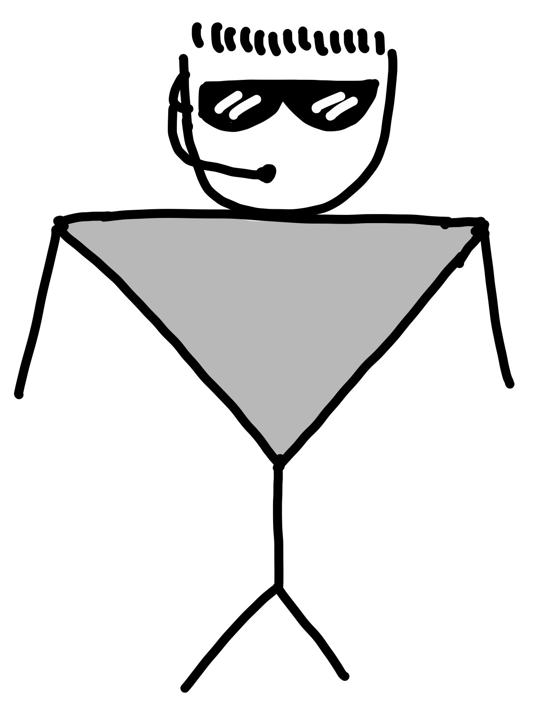

Słaba prezentacja o programowaniu funkcyjnym
Rafał Pieńkowski
Małe ostrzeżenie:
- Prezentacja jest słaba
- Jest dużo kodu
- Nie jestem ekspertem od FP (F#)
- Nię będę uczył składni F#
- Nomady, currying, itp - innym razem
- Nie wdrożyłem na produkcję kodu czysto funkcyjnego (F#)
O czym jest ta prezentacja? 🤔
O o czym jest ta prezentacja? 🤔
GREAT SUCCESS!
public class Door {
public int Id { get; private set; }
public string? OpenedBy { get; private set; }
public string? ClosedBy { get; private set; }
public DateTimeOffset? OpenedAt { get; private set; }
public DateTimeOffset? ClosedAt { get; private set; }
public bool IsOpen { get; private set; }
public void Open(string by, DateTimeOffset at)
{
if(IsOpen)
{
throw new Exception("Door open!");
}
IsOpen = true;
OpenedBy = by;
OpenedAt = at;
}
public void Close(string by, DateTimeOffset at)
{
if(!IsOpen)
{
throw new Exception("Door closed!");
}
IsOpen = false;
ClosedBy = by;
ClosedAt = at;
}
}
public class Door {
public int Id;
public string? OpenedBy;
public string? ClosedBy;
public DateTimeOffset? OpenedAt;
public DateTimeOffset? ClosedAt;
public bool IsOpen;
}
public class Door {
public int Id { get; set; }
public string? OpenedBy { get; set; }
public string? ClosedBy { get; set; }
public DateTimeOffset? OpenedAt { get; set; }
public DateTimeOffset? ClosedAt { get; set; }
public bool IsOpen { get; set; }
}

Pipe forward operator (|>)
"Passes the result of the left side to the function on the right side (forward pipe operator)."
Dodajmy trochę logiki do naszych drzwi
Dodajmy trochę logiki do naszych drzwi
Dodajmy feature
Za każdym razem, gdy ktoś spróbował otworzyć drzwi złym kluczem...
Dodajmy feature
Za każdym razem, gdy ktoś spróbował otworzyć drzwi złym kluczem...

Panie, a co się stanie jak będę chciał zapisać stan?
Panie, a co się stanie jak będę chciał zapisać stan?
Jakieś propozycję?
Event sourcing
Event sourcing
+
Event storming
Decider pattern
Jest dobrze?
Jest dobrze?
A może to jednak to zakładanie gaci przez głowę?
Spróbujmy jeszcze czegoś innego
Rebus
FPOOP
F# ❤️ C#